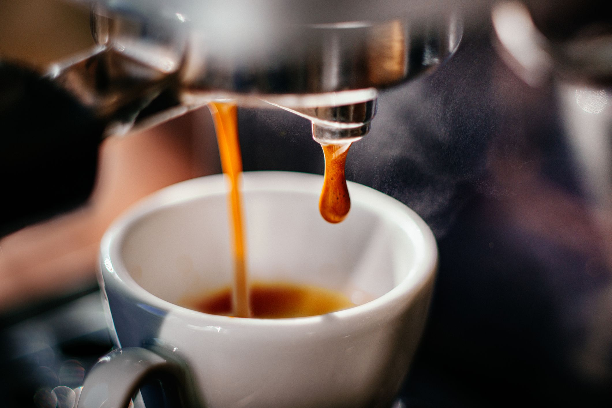
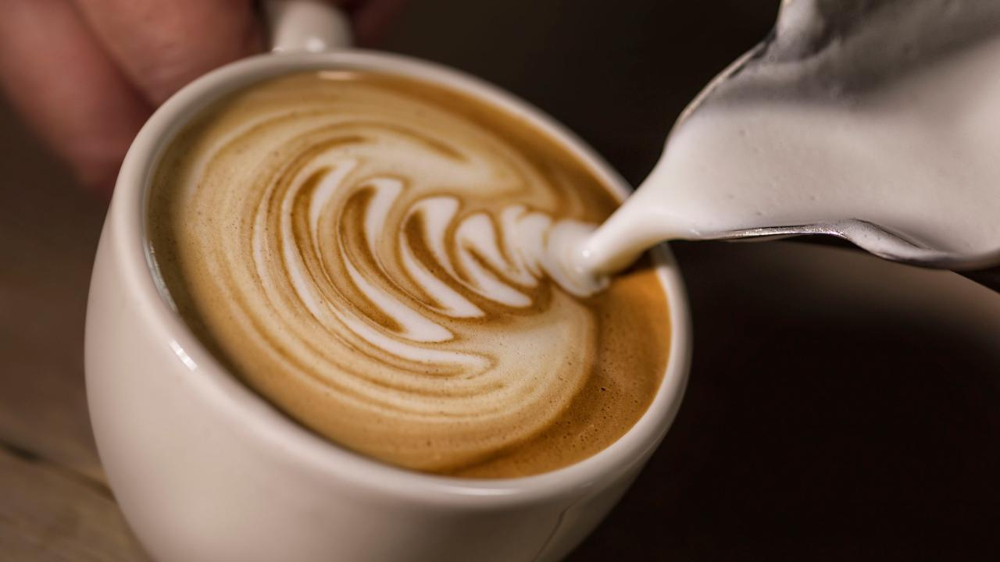
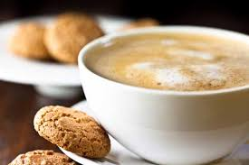
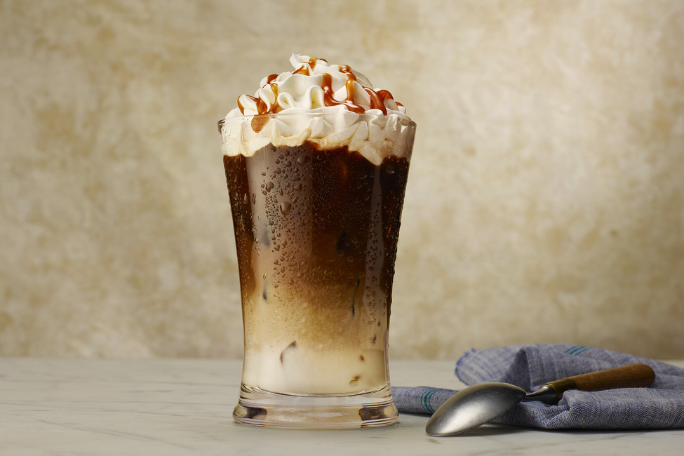

Кофены төрлүүд
Espresso:
 Бараан хүрэн болтол нь шарсан анхилуун үнэртэй үрийг тусгай эспрессо машинд өндөр даралтаар найруулж гаргасан хүчтэй хар кофе юм. Сайн болсон эспрессо кофе нь гадарга дээрээ алтлаг хүрэн өнгийн хөөслөг нимгэн өрөмтэй болсон байдаг. Хэрвээ энэ өрөм нь сайн бүрэлдсэн бол элсэн чихэр нэмэхэд хэдэн секунд хөвж байгаад алгуур доошилж уусдаг. Эспрессо нь каппучино зэрэг олон төрлийн кофены суурь болдог ч жинхэнэ кофенд дурлагчид чихэрнээс өөр зүйл нэмэхийг эсэргүүцдэг. Ингэхийг Скоч виски уудаг хүмүүс вискиндээ Кола нэмж байгаатай адил гэж үздэг гэнэ.
Хэрхэн хэрэглэх: Эспрессог яг байгаагаар нь эсвэл цайны халбагаар бага зэрэг чихэр нэмж ууна. Ус багатай, маш хүчтэй тул бага хэмжээгээр уудаг. Ус нэмж арвижуулбал гол ялгаа болсон хүчтэй амт нь мэдэгдэхгүй.
Юу хольж болох: Хөөрүүлсэн сүү нэмснээр “espresso macchiato” (будагдсан гэсэн итали үг) болдог. Дээр нь хутгасан крем нэмснээр “espresso con panna” болно. Харин граппа, конъяк, самбука зэрэг хатуу дарснуудаас бага зэрэг нэмэхэд “espresso corretto” (corretto нь засагдсан гэж орчуулагдана) болж хувирдаг.
Cappuccino:
 Хамгийн түгээмэл кофены төрөл. Жинхэнэ каппучино бол тэнцүү хэмжээний эспрессо, хөөрүүлсэн сүү, сүүний хөөснөөс бүрддэг.Найрлага нь ийм тул түүнийг амттаны оронд ч хэрэглэж болно.
Хэрхэн хэрэглэх: Ихэнхдээ каппучиногийн хөөсөн дээр чихэргүй какаоны нунтаг эсвэл хар шоколадны үйрмэг нэмдэг.
Юу хольж болох: “Scuro” (бараан) гэсэн тодотголтой бол ердийнхөөс бага сүүтэй, “chiaro” (цайвар) гэвэл сүү илүү хийсэн гэсэн үг. “Iced” буюу мөстэй каппучино нь зун цагт уухад таатай. “Skinny” гэсэн бол тослог багатай сүү хэрэглэсэн гэсэн үг юм.
Americano:
 Энэ нь нэг аяга халуун усанд нэг татах (single shot) хэмжээний эспрессо нэмснийг хэлдэг.
Нэр нь анх эспрессо Италиас Америкт дэлгэрэхэд Америкчууд шингэлж уудаг байсныг нь ингэж
шоглож өгсөн нэр.
Энэ нь нэг аяга халуун усанд нэг татах (single shot) хэмжээний эспрессо нэмснийг хэлдэг.
Нэр нь анх эспрессо Италиас Америкт дэлгэрэхэд Америкчууд шингэлж уудаг байсныг нь ингэж
шоглож өгсөн нэр.Хэрхэн хэрэглэх: Ихэнх хүмүүс сүү, чихэр нэмж уудаг бол мэргэжилтнүүд эспрессогийн амтыг мэдрэхийн тулд сүүг аль болох бага хийхийг зөвлөдөг.
Юу хольж болох: Нэг их элдэв зүйлтэй холиод байдаггүй ч зун цагт мөстэй уух нь тохиромжтой.
Caffe Latte:
Энэ бол нэг татах (single shot) хэмжээний эспрессо дээр гурав дахин их хэмжээтэй хөөрүүлсэн сүү нэмсэн хувилбар.
Хэрхэн хэрэглэх: Чихэр нэмж уухад гайхалтай амттай болно. Нарийн боов, бялуу эсвэл шинэхэн Итали талхтай хамт хэрэглэвэл сайхан өглөөний цай болж хувирна.
Юу хольж болох: Амьдрал дээр элдэв зүйл холихгүй хэвээр нь хэрэглэдэг.
Caf au Lait:
 Франц уламжлалаар хийсэн кофе. Каффе Латтетэй ижил гэхдээ эспрессоны оронд чанасан кофе хэрэглэж сүүний харьцаа нь 1:1 байдаг. Ерөнхийдөө каффе латтены сулруулсан хувилбар гэж үзэж болно.
Хэрхэн хэрэглэх:s Чихэр нэмж уувал тааламжтай.
Юу хольж болох: Ихэнхдээ дангаар нь хэрэглэдэг.
Caf Mocha (Mochachino):
Энэ бол каппучино эсвэл каффе латте дээр шоколадны сироп, нунтаг зэргийг нэмж гаргасан хувилбар. Бэлтгэдэг янз бүрийн хувилбарууд байдаг тул кофе шопоосоо хэрхэн бэлтгэдгийг нь урьдчилан асууж болно.
Хэрхэн хэрэглэх: Какаоны нунтаг, шоколадны үйрмэг нэмж ууна.
Юутай хольж болох: Хутгасан кремээр хачирлаж болно.
Caramel Macchiato:
 Кофе шоп болгон өөр өөрийн аргаар бэлтгэдэг олон хувилбартай ундаа. Хамгийн түгээмэл жор нь эспрессо, карамел, хөөрүүлсэн сүү холих. Амт оруулахын тулд ванилла нэмэх нь бас бий.
Хэрхэн хэрэглэх:Амсаж үзээд чихэр нэмэх эсэхээ шийдэх хэрэгтэй.
Юутай хольж болох: Карамелны сүмстэй хольж болно. Гэхдээ юутай ч холихгүй уухад хамгийн тохиромжтой.